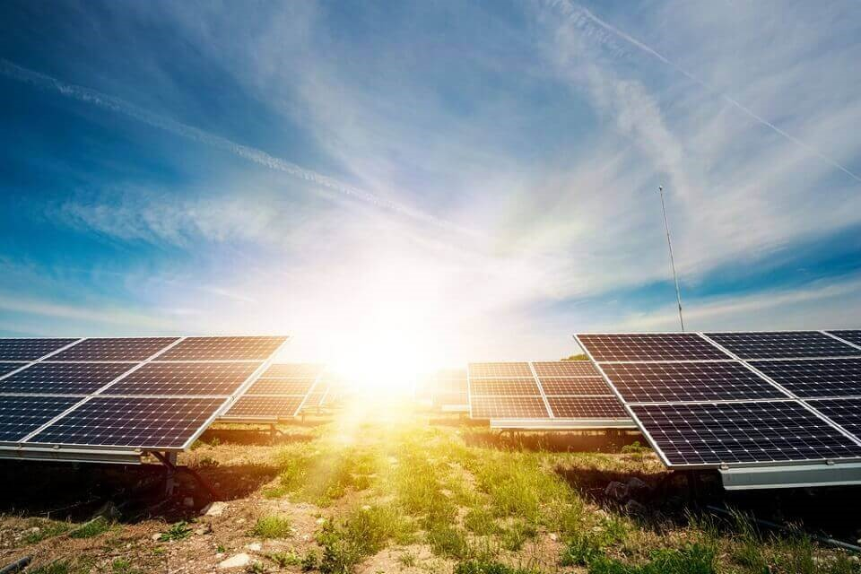

A proteção ao meio ambiente é um dos temas mais debatidos nos tempos modernos. Como não poderia deixar de ser, nosso trabalho, abordou a produção de energia não poluente, especificamente a geração de energia elétrica por meio dos raios solares. Para a execução do trabalho tivemos que realizar pesquisas históricas, tecnológicas, econômicas, financeiras, sustentabilidade e perenidade desta nova tecnologia e os impactos sócios ambientais. Entender a evolução desta tecnologia, impactos, desafios e, as barreiras ainda a serem superadas nos ambientes já citados, nos fez refletir sobre o futuro da profissão que escolhemos bem como, suas demandas. Nos deparamos com o exemplo vivo e, em processo de estabilização, de um exemplo da quarta revolução industrial, esta renomeada de Sociedade inteligente pelo primeiro ministro japonês, tem se materializado no uso inteligente da tecnologia a serviço não apenas do cidadão, mas de toda a sociedade. A exposição a estes cenários, processos construtivos e novos métodos, nos proporcionou uma nova visão de mundo, bem como de alguns desafios da nossa geração e, porque não dizer das gerações futuras.